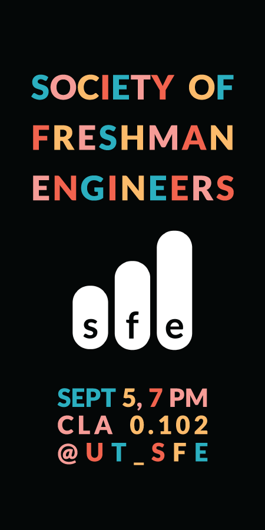
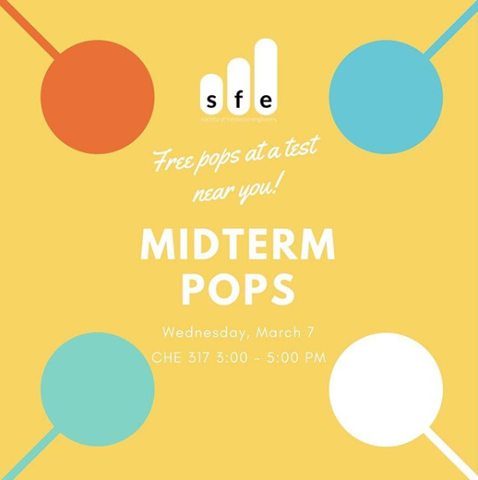
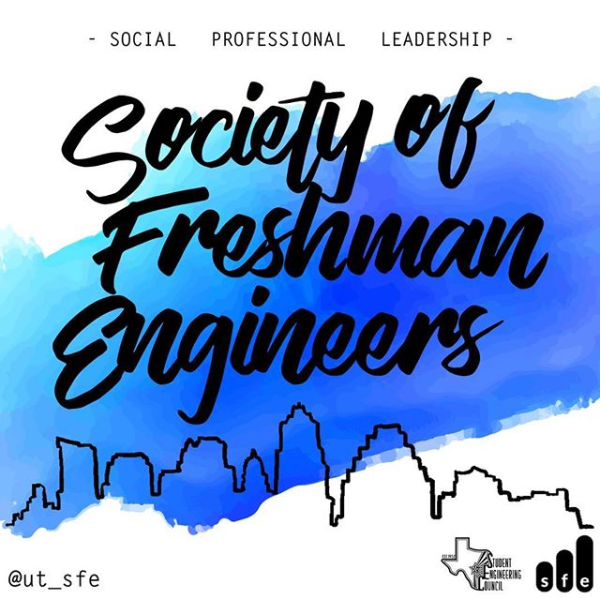
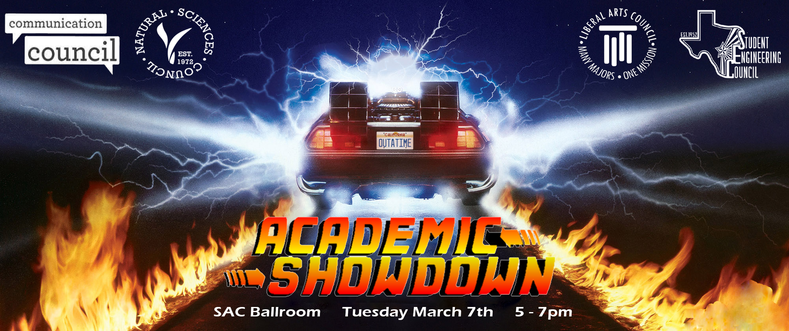
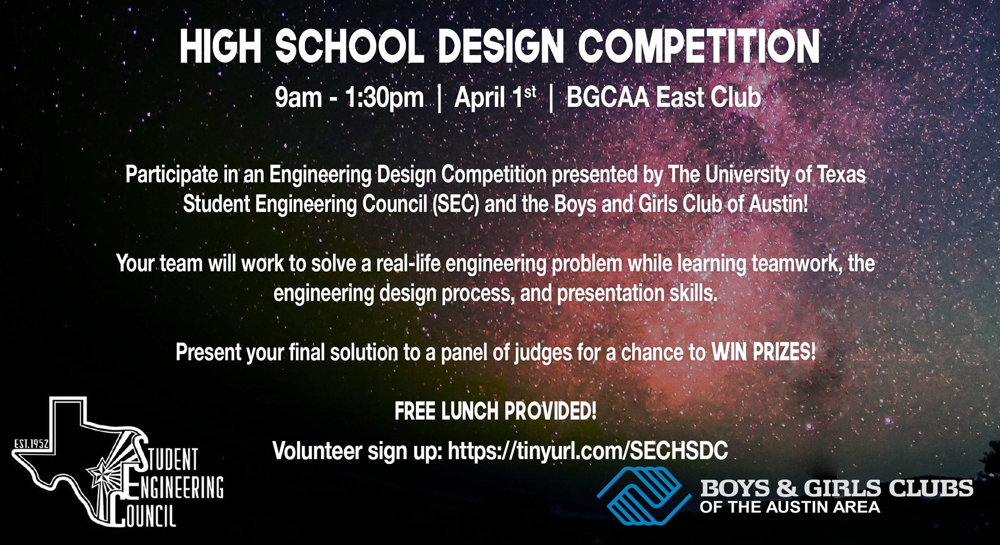
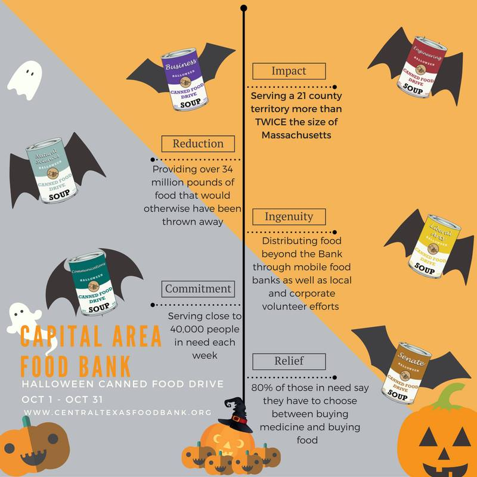

Sticker design used to advertise SFE at the beginning of the 2017-18 school year

Midterms Pops, during which SFE handed out motivational notes and popsicles
to freshmen after their exams

An instagram advertisement for the Society of Freshman Engineers
For more SFE related posts, please see its Instagram page

An interdisciplinary debate between professors from each Council's college

High School Design Competition hosted by the Student Engineering Council and Boys & Girls Club of Austin

One of many graphics produced for the Engineering Council's annual Halloween themed canned food drive
Rohan Chaudhry, 2018